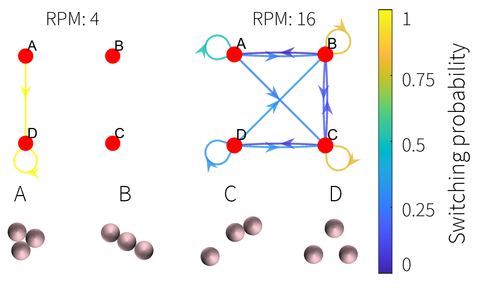
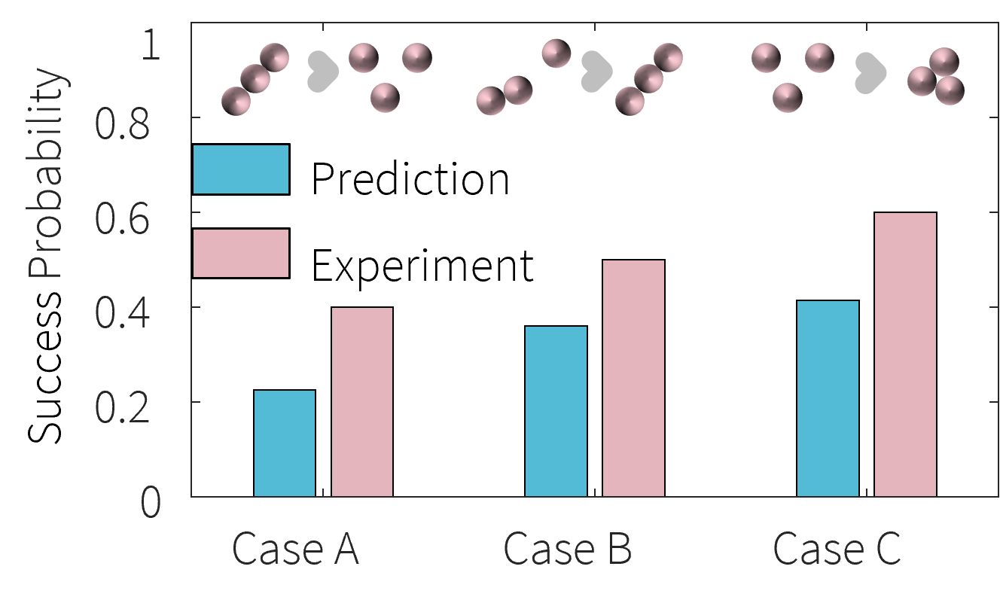

Experimental setup
- Bubble wall rotation controlled in speed and position.
- Computer vision to track the object trajectory.

CREATE Lab, EPFL
March-June 2022

Taking inspiration from morphogenesis, adhesion, and de-adhesion in nature, this project explores how to change the configuration of floating objects in aquatic environments.


Paper presented at RoboSoft 2025 - DOI: 10.1109/RoboSoft63089.2025.11020845